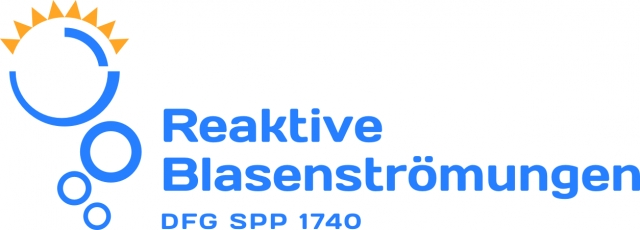
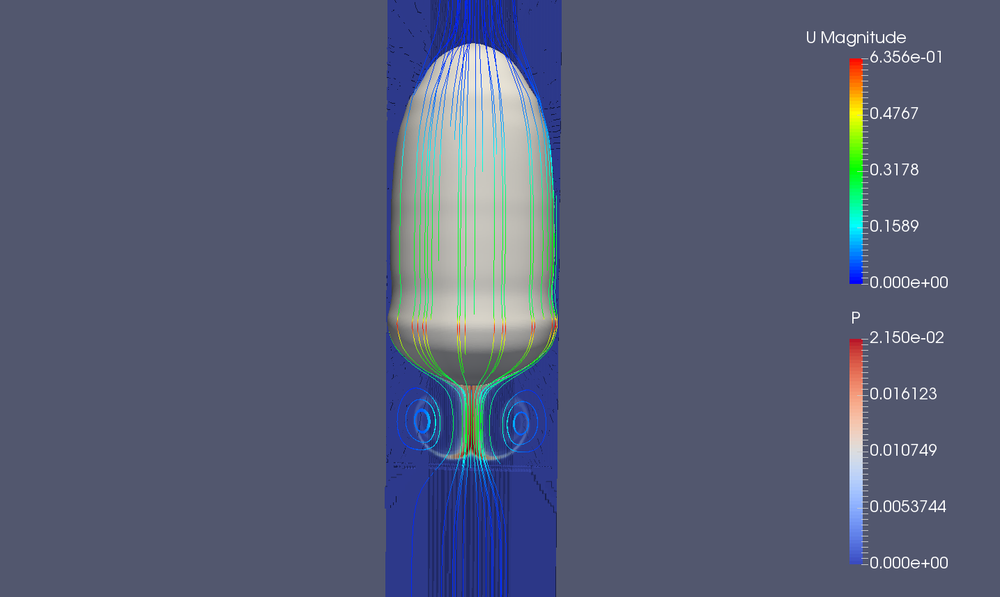
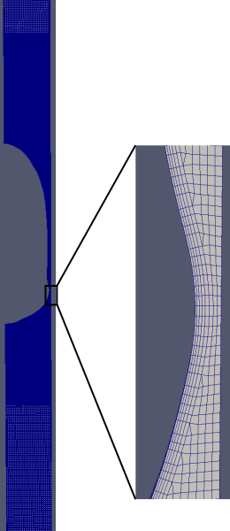
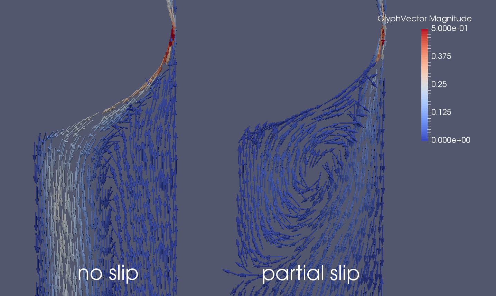
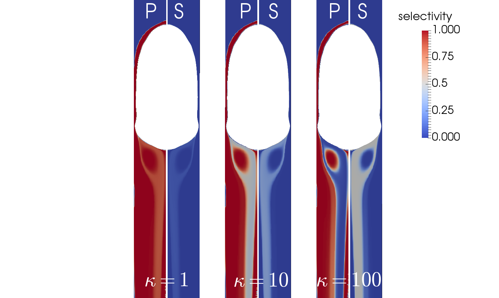

Entwicklung und Anwendung einer Methode zur Direkten
Numerischen Simulation reaktiver Transportprozesse in Blasensystemen
Dennis Hillenbrand, Dieter Bothe (?), Holger Marschall

Previous work - selectivity
Competitive reaction scheme for single rising bubbles (Manuel)
with 'refined-mesh approach'
Previous work - SGS model
- Combination of SGS model with maschine learning
- Save mesh resolution in species boundary layer
- Proof of concept for simple reaction scheme (decay reaction)
- Extension to competitive-reactive scheme (ongoing work)
Why Taylor bubbles
- Industrial importance for microfluidic applications
- High mass and heat transfer rates
- Controllable experiments for scientific research
- Rise velocity almost independent from bubble volume
- All possible wake structures can be obtained

3D study of mass transfer around Taylor bubble
Numerical challenges
- Resolution of very thin film region
- Resolution of species boundary layer
- Resolution of wake structures
- Bubble deformation
Simplified setup to investigate important parameter range:
- Rotational symmetry
- One-phase simulation

Mesh resolution for Taylor bubble
Goal - experimental validation
- Initialize bubble shape from experiments
- Validate hydrodynamics for steady-state flows
- Use of symmetric wake structures
- Compare rise velocity and velocity structures
- Influence of surfactants?

Boundary condition influence on wake
Goal - Selectivity investigation
- Competitive consecutive schemes
$A + B \rightarrow P$ $A+P \rightarrow S$
- Realistic and important parameter ranges for reaction constants
- Influence of wake structure on local selectivity

Selectivity for different reaction rate ratios
Goal - mass transfer correlations
- Correlations available in literature for physisorption
- Mainly for smaller channels $d \le 2 mm$
- Underestimation of mass transfer up to factor of 10
- Best result from penetration theory $k_l = 2 \sqrt{\frac{D}{\pi t_c}}$
- No correlation for enhancement by reaction in bulk phase found
Next steps
- Validate code against experimental results (TUHH)
- Investigate validity of simplifying assumptions (rotational symmetry, one-phase, constant bubble shape)
- Use highly resolved meshes in boundary layer and wake
- Investigate local fields in bubble wake
Thank you
for your attention!
Remaining questions?